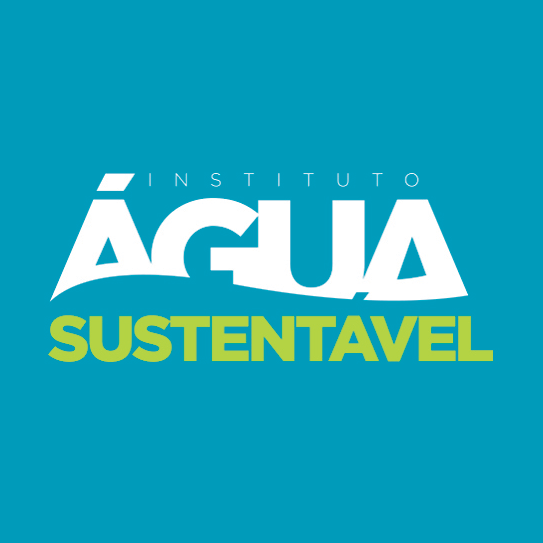

Criado no dia 22 de Março de 2016, O Instituto Água Sustentável promove o uso sustentável da água através do desenvolvimento de estudos, projetos e pesquisas e da realização de eventos científicos e educativos. Sua missão é Promover a defesa, preservação e conservação do meio ambiente hídrico, bem como o desenvolvimento sustentável, econômico e social relacionado ao seu uso.

Em outubro de 2004 um empresário da Cidade de Petrópolis idealizou algo que pudesse agregar valor ao Meio Ambiente. Surgiu a ideia da ÁGUA, algo que fosse educativo e interativo e alertasse e envolvesse pessoas sobre a importância desse bem tão precioso. Assim surgiu há 16 anos a ONG Projeto Água com o slogan: “ Água o Maior Bem da Terra.